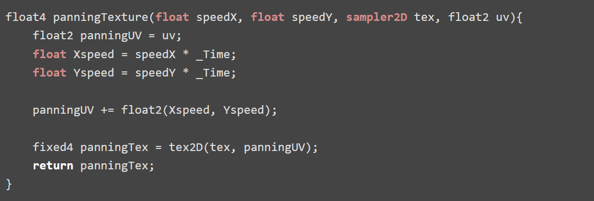
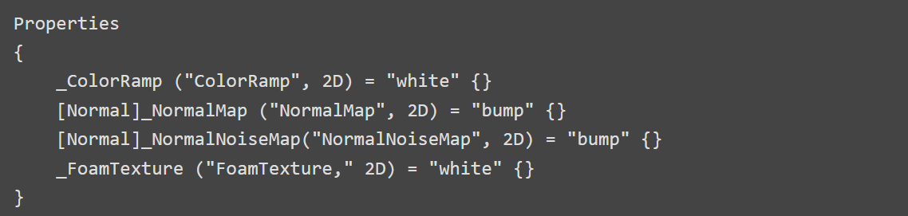
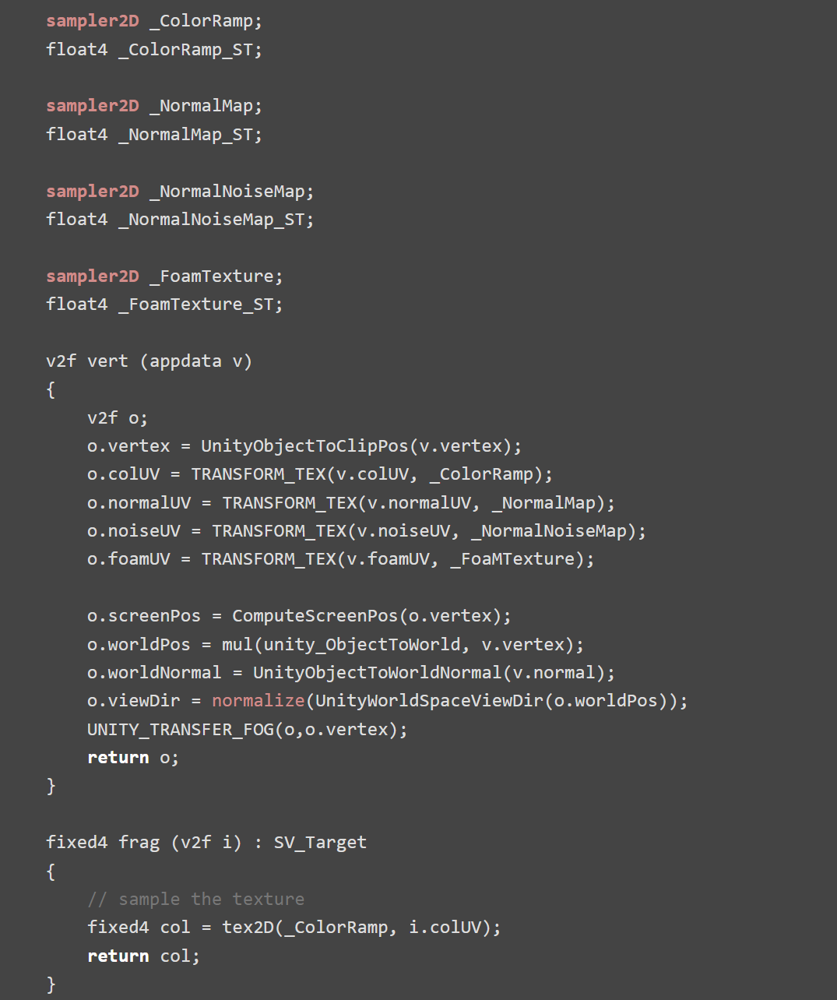
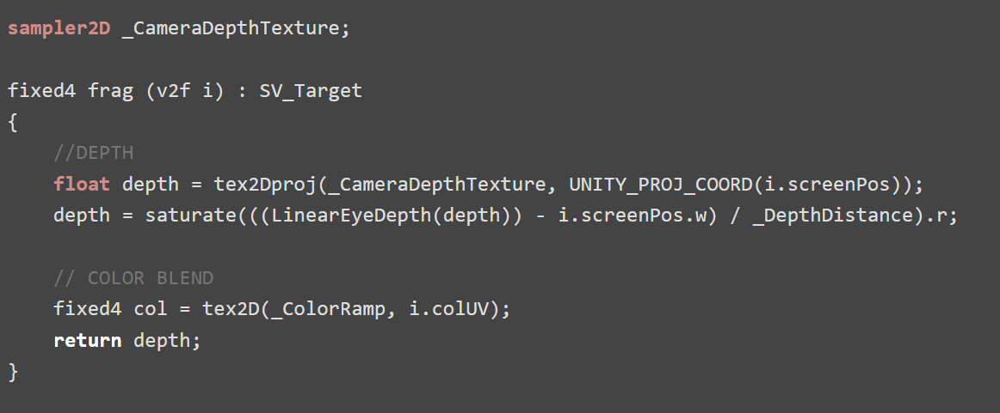
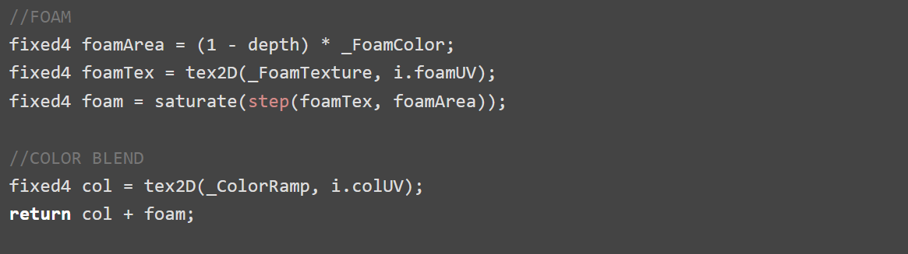
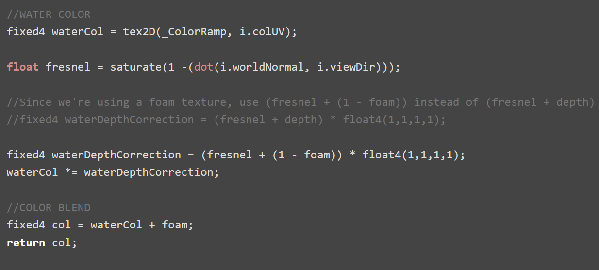
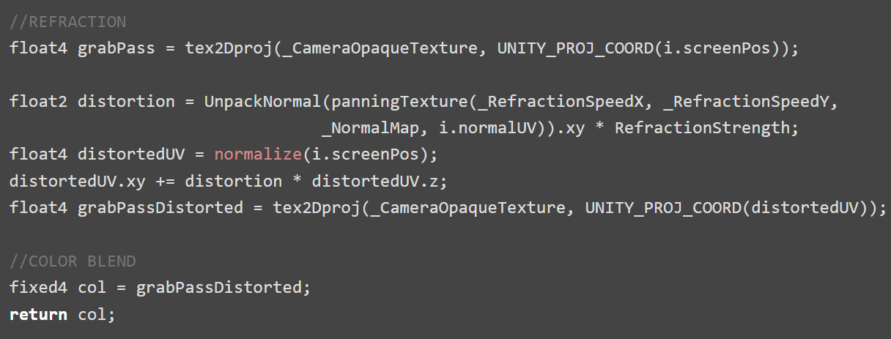
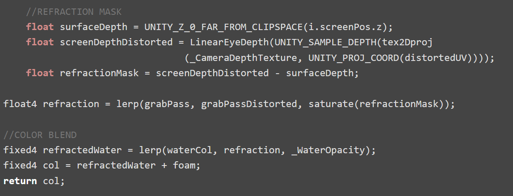
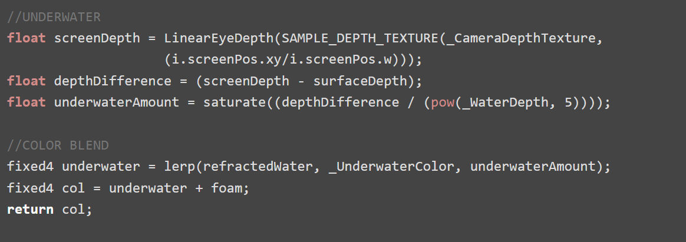
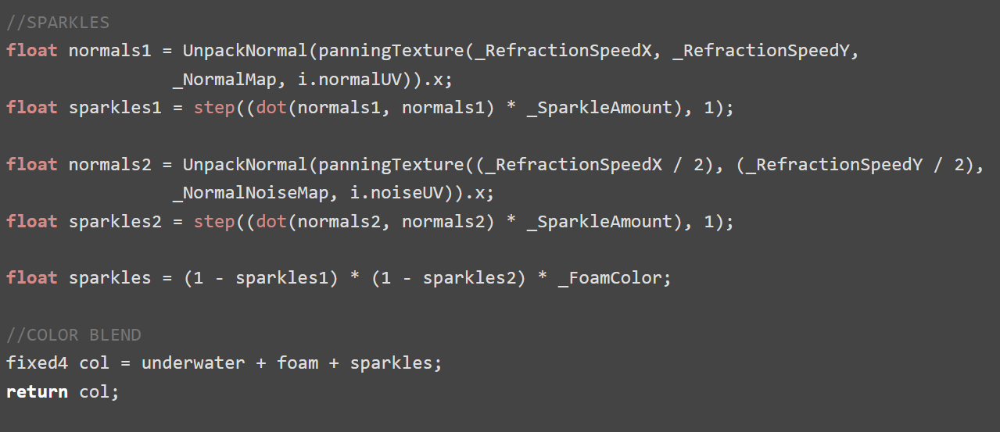

Stylized Water Shader
This stylized water shader includes depth, foam, refraction, and sparkles! It’s pretty versatile on it's own, but also can be easily built upon for more specific uses.
My main inspiration and references:
RIME Stylized VFX
Harry Alisavakis' Water Shader
Catlike Coding Looking Through Water
All you’ll need for the water is a simple plane. I built a pool shape with a tilted floor to mimic a beach. I also like to add some random meshes intersecting the water to test depth and foam.
For the color of the water, we’ll be using a Color Ramp texture. This will make it easy to change the look of the water by simply dropping in a new color ramp.
To simulate the waves of the water, we will use a normal map. The look of the water can also change greatly based on this texture so make sure to experiment! When you import the normal texture, make sure that it’s marked as [Normal] in the shader properties so it works properly. A second normal map is optional and can be used to add more detail and randomness later.

Panning textures are one of the main tools used in shaders, so I always just make my own function that I can call anytime in the shader. The function input is two floats, for the x and y speed, a sampler2D for the texture, and a float2 for the UV coordinates.

This shader uses an unlit vertex/fragment shader with the render queue set to transparent. I set up the textures that we will be using as well as the shader variables ScreenPos, ViewDir, WorldNormal, and WorldPos. This set-up will simply return the Color Ramp texture.



We can get the depth by accessing the built-in shader variable _CameraDepthTexture. This will be used to see where objects intersect with our water plane, and where there would also be foam. We can multiply this by _DepthDistance to control the size of the depth.


If we want to color the shallow areas, the depth texture as is, is the reverse of what we want. So, we can One Minus the depth then multiply that with the _FoamColor. To add a texture to the foam, just Step the foamTexture with the foamArea to get a nice stylized foam texture. Finally, using the panningTexture() function, we can pan the foam for some motion.


I like to add a fresnel to the depth which helps smooth out some of the depth errors that can sometimes occur in more complicated scenes. Since we’re using a foam texture, I added the fresnel to One Minus the foam so we don’t see any inconsistencies. I also find that the fresnel is useful to keep the vibrancy and saturation of the water color in areas it will later be more transparent.


For refraction, we will need a “snapshot” of the scene as it looks right now. This is a grab pass, and in URP, can be accessed with the built-in variable _CameraOpaqueTexture. Make sure to enable the Opaque Texture in the render pipeline settings!
Pan the normal texture using the PanningTexture() function. Make sure that the normal texture is unpacked to ensure that the values go from -1 to 1 instead of from 0 to 1. Initialize a float4 distortedUV and assign it to the screenPosition. Now we can add our panning normals to the distortedUV. Multiply this by distortedUV.z to normalize to screen position. This will distort our snapshot of the scene by the panning normal map.


There are some parts being refracted that shouldn’t be refracting, like the parts of the mesh that are above the water, so we have to mask it out. To do so, we can subtract the surfaceDepth from a distorted version of the screenDepth. Now that we have a mask to only distort what’s under the water, we can Lerp a clean, undistorted grabpass with the distorted grabpass using the mask, and done! Lerp again between the water color and the refraction with _WaterOpacity so we can control how transparent the water looks.


We can use a similar technique to what we used in the refraction mask to calculate where the water is deeper. Coloring the deeper water a darker color is a nice way to add some more depth to the water’s color on top of the color ramp. Subtract a clean surfaceDepth from a clean screenDepth. We can divide this by _WaterDepth to make the gradient easier to control. Finally, Lerp this with the refracted water. This is a subtle effect but I think it adds a lot of depth!


Pan the normal texture using the PanningTexture() function and just get the R value. We will be using the same NormalMap we used to distort the grab pass so the sparkles line up with the waves, so the tiling and speed should be the same. Now dot the R value with itself. This will isolate the parts of the map that are pointing more vertically (We will have to One Minus this later). Multiply this by the _SparkleAmount and run it through the Step function to get hard edges. We only want to see a little bit left, since these will be the sparkles shining on top of the water. Finally, negate the sparkles values, and add it on top of the water.

We can stop there, but depending on the texture, the tiling of the sparkles may be too obvious or you may want to decrease the overall amount of sparkles. Just repeat the above process with a different texture with different tiling and speeds. Multiply them together and now the sparkles will look more random. And we’re done!

